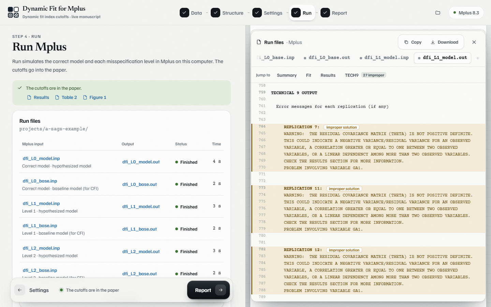

What it does
Three ways in
Raw data (the app fits your CFA in Mplus first), an Mplus output file, or standardized estimates typed in from a paper.
One-factor, multi-factor, second-order
Continuous items as normal data with ML, or ordinal items generated from the estimated thresholds and analyzed with WLSMV.
The rules of dynamic
Misspecifications as in the dynamic R package: omitted cross-loadings, or residual correlations of .30 in one-factor models.
CFI in every replication
Mplus 8.3 Monte Carlo does not report CFI, so each condition is rerun with the baseline model on the same seed.
Improper solutions in the open
Replications with a non–positive definite covariance matrix (TECH9) are counted; keep them, as dynamic does, or exclude them.
A paper draft, not just numbers
APA 7 method, results, tables, a figure in black and white or color, and references. Every Mplus file is one click away.
How it works
- Data. Choose raw data, an Mplus output or typed-in estimates. A sample data set and a published example are included.
- Structure. Assign items to factors, optionally under a second-order factor.
- Settings. Ordinal or normal data, number of replications, improper solutions.
- Run. Mplus simulates the correct model and every misspecification level, two runs at a time.
- Report. The cutoffs, the observed fit and the distributions appear in the paper.

Get started
Windows app
Download DynamicFitMplus.exe from the latest release and double-click it. The app opens in your browser; projects are saved next to the .exe. The file is not signed, so Windows may ask once: More info → Run anyway.
From source
With Node.js 18 or newer, no packages to install:
git clone https://github.com/cahitgs/dynamic-fit-mplus.git cd dynamic-fit-mplus node serve.mjs --open
How to cite
Marangoz, M. C. (2026). Dynamic Fit for Mplus (Version 1.0.0) [Computer software]. https://github.com/cahitgs/dynamic-fit-mplus
Please cite the method papers as well:
McNeish, D., & Wolf, M. G. (2023a). Dynamic fit index cutoffs for confirmatory factor analysis models. Psychological Methods, 28(1), 61–88. https://doi.org/10.1037/met0000425
McNeish, D., & Wolf, M. G. (2023b). Dynamic fit index cutoffs for one-factor models. Behavior Research Methods, 55(3), 1157–1174. https://doi.org/10.3758/s13428-022-01847-y
McNeish, D. (2023). Dynamic fit index cutoffs for categorical factor analysis with Likert-type, ordinal, or binary responses. American Psychologist, 78(9), 1061–1075. https://doi.org/10.1037/amp0001213
McNeish, D., & Manapat, P. D. (2024). Dynamic fit index cutoffs for hierarchical and second-order factor models. Structural Equation Modeling: A Multidisciplinary Journal, 31(1), 27–47. https://doi.org/10.1080/10705511.2023.2225132
McNeish, D., & Wolf, M. G. (2024). Direct discrepancy dynamic fit index cutoffs for arbitrary covariance structure models. Structural Equation Modeling: A Multidisciplinary Journal, 31(5), 835–862. https://doi.org/10.1080/10705511.2024.2308005
Wolf, M. G., & McNeish, D. (2023). dynamic: An R package for deriving dynamic fit index cutoffs for factor analysis. Multivariate Behavioral Research, 58(1), 189–194. https://doi.org/10.1080/00273171.2022.2163476